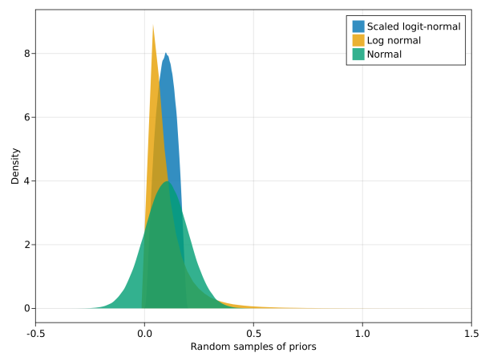
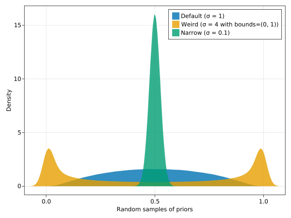
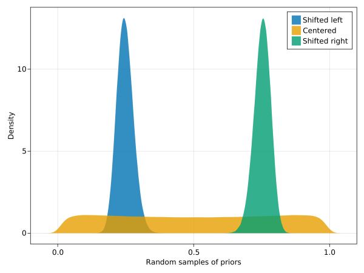

Specifying and fine-tuning prior distributions
This example shows how to specify priors in OceanTurbulenceParameterEstimation and illustrates some of their properties.
Install dependencies
First let's make sure we have all required packages installed.
using Pkg
pkg"add OceanTurbulenceParameterEstimation, Oceananigans, Distributions, CairoMakie"Then we import packages
using OceanTurbulenceParameterEstimation
using CairoMakie
using DistributionsWhat's a prior?
A "prior" is a probability distribution for an known parameter that represents "prior knowledge" of the problem at hand, before we generate new knowledge with a new model-data comparison via ensemble Kalman inversion (EKI).
In the (EKI) context, a prior distribution determines (i) the initial distribution of parameter values in the ensemble and (ii) the mapping between physical space where constraints on parameter values are applied, and the "unconstrained" space in which the EKI dynamics evolve (and where parameters are assumed normally-distributed).
Prior flavors
OceanTurbulenceParameterEstimation supports three types of prior distributions. The normal prior distribution is provided by Distributions.jl,
normal_prior = Normal(0.1, 0.1)Normal{Float64}(μ=0.1, σ=0.1)For LogNormal priors, we provide a special constructor that takes the mean and standard deviation std of the prior distribution in constrained space:
lognormal_prior = lognormal(mean=0.1, std=0.1)LogNormal{Float64}(μ=-2.649158683274018, σ=0.8325546111576977)lognormal calculates μ and σ for Distributions.Lognormal(μ, σ). Parameters with a Lognormal prior distribution are strictly positive. Finally, the "scaled" logit-normal prior,
logitnormal_prior = ScaledLogitNormal(bounds=(0, 0.2))ScaledLogitNormal{Float64}(μ=0.0, σ=1.0, lower_bound=0.0, upper_bound=0.2)can be used to provide strict upper and lower bounds for parameter values.
Samples
Sampling the distributions reveals their properties. We define a function to use later, too.
function visualize_priors(priors; samples = 10^6)
fig = Figure()
ax = Axis(fig[1, 1:9], xlabel="Random samples of priors", ylabel="Density")
for (prior, name) in zip(values(priors), keys(priors))
density!(ax, rand(prior, samples), label=replace(string(name), "_" => " "))
end
axislegend(ax)
return fig, ax
end
fig, ax = visualize_priors(Dict("Normal" => normal_prior,
"Log normal" => lognormal_prior,
"Scaled logit-normal" => logitnormal_prior))
xlims!(ax, -0.5, 1.5)
We note three important features:
Normalsamples can be negative.Lognormalsamples cannot be negative, but can have large positive values.ScaledLogitNormalsamples have compact support, and thus strict upper and lower bounds.
Boundedness is a very useful property of ScaledLogitNormal, so we explore specifying ScaledLogitNormal priors in more detail.
Fine-tuning a ScaledLogitNormal prior
We can tune the "width" of a ScaledLogitNormal by supplying the standard-deviation σ:
logit_priors = Dict("Narrow (σ = 0.1)" => ScaledLogitNormal(σ = 0.1),
"Default (σ = 1)" => ScaledLogitNormal(σ = 1),
"Weird (σ = 4 with bounds=(0, 1))" => ScaledLogitNormal(σ = 4))
fig, ax = visualize_priors(logit_priors)
xlims!(ax, -0.1, 1.1)
Smaller standard deviations produce narrower prior distributions. However, weird shapes can result when a standard deviation is specified that's larger than the bounds interval (eg σ > diff(bounds)). In the above example we're using the default bounds = (0, 1).
Another way to build ScaledLogitNormal prior is to specify a central interval and mass. This allows us to shift the center of mass relative to the bounds (here we use the default bounds=(0, 1)), and provides a slightly safer way to tune a distribution.
shifted_priors = Dict("Shifted left" => ScaledLogitNormal(interval=(0.2, 0.3), mass=0.9),
"Shifted right" => ScaledLogitNormal(interval=(0.7, 0.8), mass=0.9),
"Centered" => ScaledLogitNormal(interval=(0.2, 0.8), mass=0.6))
fig, ax = visualize_priors(shifted_priors)
xlims!(ax, -0.1, 1.1)
The "Centered" case uses a mass that's proportional to the relative width spanned by interval (eg mass = diff(interval) / diff(bounds)) to produce a nearly uniform distribution within the bounds.
This page was generated using Literate.jl.